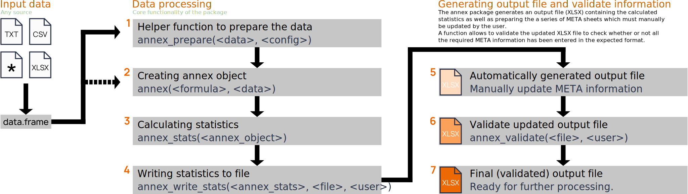

Installation
The R package annex provides a series of functions and methods to easily process measurement data for the IEA EBC Annex86 project, as well as writing (and validating) the final file intended to be used to build a data repository for research in the field related to the project.
Install via remotes
The package is currently hosted on github and can be installed via the remotes package by calling remotes::install_github() from within an active R session. Note that you may need to install the remotes package first.
library('remotes')
install_github("IEA-EBC-Annex86/annex")Dependencies
The annex package available via this repository has a few dependencies required to process the data. R should automatically resolve backwards dependencies on installation. For more information, have a look at the DESCRIPTION file on github.com.
Overview
The figure below shows a schematic of the process on how to use the annex package to process measurements as well as create and validate the final standardized output file.

At first, the user needs to import the required data sets himself/herself. The annex package does not provide functionality as the data come in various different formats, however, the documentation provides some examples in case the data is available as in the XLSX format or as tabular text files (see Analysis from XLSX or Analysis from textfiles), but the package is not limited to this. All needed is to provide the data as proper R data.frames for further processing.
- The function
annex_prepare()is a helper function to prepare the measurement data set for further processing steps (can be bypassed if needed). -
annex()is the creator function for annex objects. It defines what to process and performs a series of checks. -
annex_stats()takes up theannexobject from the previous step to calculate the statistics (aggregated statistical mesures); returns aannex_statsobject. - The object from the previous step can then be written into the final XLSX file.
- The result is an XLSX file containing the statistics as well as pre-filled sheets for the required meta information. This information has to be filled in manually by the user.
-
annex_validate()can be used to check if all meta information has been filled in properly or if further manual interaction by the user is required. - Once the validation is happy with the XLSX file, the analysis is completed and the final analysis can e.g., be submitted to an upcoming research repository or used for further analysis.
Documentation
Documentation and examples are available on github.io
The documentation contains a series of articles which explain how to use the annex package as well as some additional information regarding package functionality.